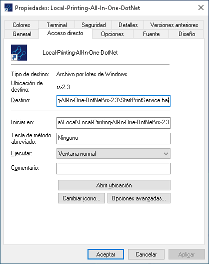
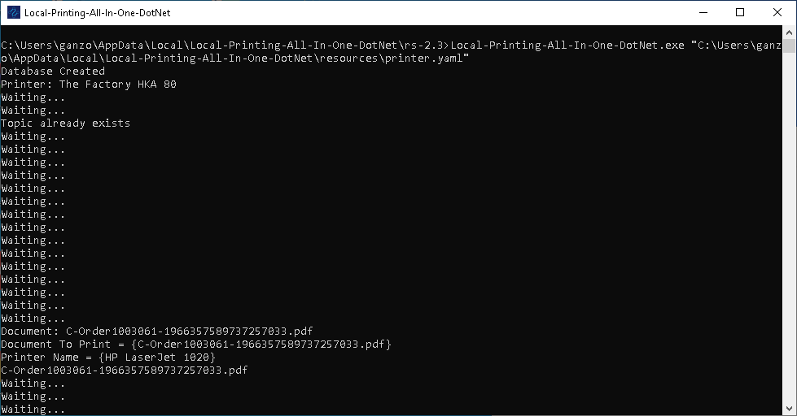

Verificar el funcionamiento del Cliente de Cola de Impresión
Verificar que la Aplicacion este ejecutando la version correcta
Se debe acceder a las propiedades del Acceso Directo de la aplicacion que se encuentra en el escritorio.
Por Ejemplo si la version instalada es la siguiente: Local-Printing-All-In-One-DotNet-rs-2.3.exe
Esta parte en el nombre del instalador rs-2.3 corresponde a la version en la que se encuentra la aplicación.

Se Deben verificar los siguiente campos viendo si corresponden con la versión instalada:
Ubicación de Destino: rs-2.3
Destino: C:Users(Usuario de Windows)AppDataLocalLocal-Printing-All-In-One-DotNetrs-2.3StartPrintService.bat
Iniciar en: C:Users(Usuario de Windows)AppDataLocalLocal-Printing-All-In-One-DotNetrs-2.3
En caso de que alguno de estos valores no coincida, se debe modificar el acceso directo colocando la version correcta en este caso rs-2.3.
Verificar que la aplicacion reciba datos
Para hacer esto se debe iniciar la Aplicacion Local-Printing-All-In-One-DotNet y enviar un documento desde ADempiere:
Observando en la consola que consola se reciba un mensaje con la siguiente estrcutura:
Document: C-Order1003061-1966357589737257033.pdf
Document To Print = {C-Order1003061-1966357589737257033.pdf}
Printer Name = {HP LaserJet 1020}
C-Order1003061-1966357589737257033.pdf

En estas lineas se muestra informacion del documento recibido, nombre de documento y el nombre definido en ADempiere para la impresora.
Problemas al momento de recibir el documento
Verificar si se escogio la impresora correcta al momento de imprimir.
Verificar que los datos de conexión configurado en ADempiere corresponden con los definidos en el archivo printer.yaml
Verificar que la Aplicacion Imprima por la impresora predeterminada
Abrimos impresoras y faxes, luego ubicamos la impresora predeterminada y pulsamos en abrir cola.


Abrimos la aplicación Local-Printing-All-In-One-DotNet.
Se abrira la consola de windows, y mostrara lo siguiente

Enviar un documento de desde ADempiere.
Document: C-Order1003061-1966357589737257033.pdf
Document To Print = {C-Order1003061-1966357589737257033.pdf}
Printer Name = {HP LaserJet 1020}
C-Order1003061-1966357589737257033.pdf
Se recomienda tener en primer plano la ventana que se abrio en el primer paso, y de esta manera observar lo que se envia hacia la impresora predeterminada, ya que de otro modo por la velocidad a la se ejecuta no tendra tiempo suficiente para ver el documento recibido.
Problemas al momento de imprimir
Si al momento de imprimir no se envia el documento a la impresora predeterminada, se debe tomar en cuantea lo siguiente
La impresora no esta configurada como predeterminada.
Acrobat Reader DC o Foxit Reader no estan establecidos como la aplicacion por defecto para visualizar PDF.
El nombre de la impresora no es el mismo en el archivo printe.yaml y en ADempiere.
Cuando usas Adobe Acrobat Reader DC y el archivo se recibe correctamente y se guarda en la carpeta temporal, pero no se envia a la cola de la impresora. Se debe optar por cambiar la aplicion por Foxit Reader.